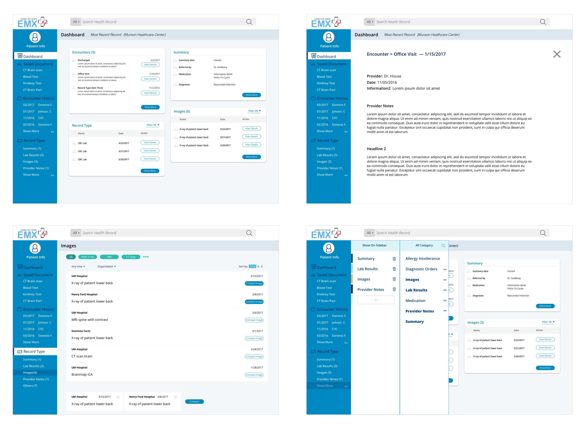
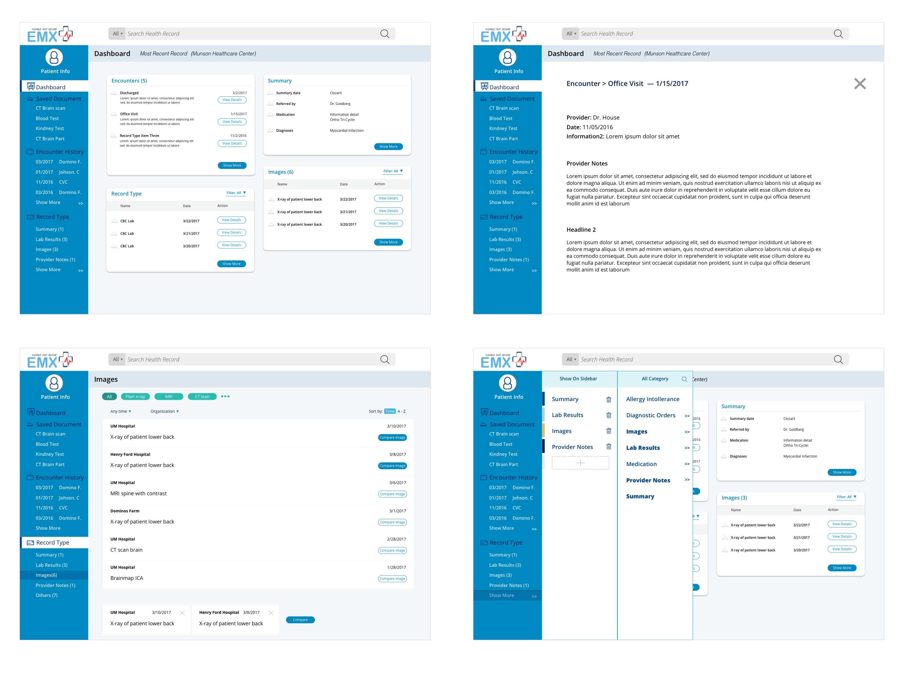

Project Overview
Summary
This project was completed on behalf of our client, EMX Systems, a healthcare startup developing a medical record exchange system that aggregates patient records from separate electronic medical record(EMR) systems to provide doctors with faster and more complete information about their patients. I worked as a UX researcher and designer on a team of five to assess the needs of medical professionals and design the frontend interface using our research findings.
Background
Patients frequently see multiple doctors during the course of their treatment due to moving, travelling, or transferring a specialist. It likely that their new doctor will use a different EMR than their previous doctor. This means that patient record transfer is required. Unfortunately, most EMRs are unable to interact with systems outside their vendor’s ecosystem. As a result, many hospitals still rely on mail and fax to transfer records. These analog methods slowdown the patientcare timeline and create additional costs when unavailable tests are repeated due to time.
Our client, EMX Systems, aims to solve this problem developing system which integrates with existing EMRs so that patient data existing in separate systems can be combined and viewed within a single interface. Our job was to design this interface.
My Role
I was in charge of conducting interviews with two doctors and took part in the analysis of the results. During the prototyping stage, I contributed screens at each iteration and took charge of developing a UI pattern library to improve consistency in our visual design. I also took part in conducting usability tests of the prototypes.
 

Research Methods
Learning about our users
We conducted ten interviews with various types of medical professionals in order to better understand our audience’s needs, pain points and workflows. These interviews were conducted of the course of three weeks and lasted 60-90 minutes each. Once completed, our team used a qualitative analysis method called affinity mapping to look for relationships within our interviews.
The digital version of our affinity map, used to group our interview data.
Research Findings
Research Artifacts
Using our research, we developed personas to represent the behaviors of our users as we moved into the prototyping phase. We also created a journey map to visualize user workflows in a concise manner.

Our personas we generated from conducting user interviews

Our journey map, used to visualize one of our persona's workflow
Building the UI
Design Goals
In the first phase of our design we first defined four problems which our design should aim to solve.
Place the doctor-patient relationship first
Our design should focus on improving the speed and efficient for doctors when they see their patients. The aim of our client’s product is to minimize delays in patient care – our design should match that goal.
Reduce the clutter
Our UI design should be adjustable so that users can remove the information they don’t need. Make sure that our users can find what they need faster.
Be flexible with the users
In order to integrate with users’ workflow, we need select features that match how patient documents are actually used.
Ideation
Using our research, our team began brainstorming and wireframe and gave continuous feedback to develop ideas.

Some of the sketches created along the way
Iterative Prototyping
Based on our meetings and wireframes, we developed a rough prototype of the interface to show to the client for feedback.
We used this iterative cycle to continuously change and introduce new features in prototype.

evolution of the dashboard
Usability Testing
Once we reached a stage where the prototype was representative of the final design, we conducted usability tests by introducing our prototype to several doctors. From our tests, we made several final refinements.
Language Differences
We learned from testing that some of the terms we used had be modified because they held specific meanings in our users’ domain. In our initial prototype, we used the term “history” as label a list of encounters it turned out that it was the wrong word to use. One user said, “When I see the word history, I think of the history of this patient’s diagnosis.” It turned out our label was confusing users!

Changes to the labelling based on usability test findings.
Sorting Methods
Our team made the assumption that doctors would look for a specific imaging based on name. When we showed users the prototype, we learned that this was not true. In practice, images are loaded in EMR systems with distinct enough titles to search by name. Our users preferred to search for medical imaging related documents via name of the image type (e.g. CT Scan, Chest X-ray, Lower Back X-ray).
To accommodate for this discovery, the filter feature in EMX was redesigned to allow filtering by different types.
UI Pattern Library
We developed a color and typographic guide for our client’s development to reference, as well as a through UI library to ensure a consistent look during development. At the end of the project, the library was given to the client as deliverable.

Outcomes
Our client was very satisfied with our final results. After some minor visual tweaks, we sent our client our final deliverables, which included a visual identity guide, a UI library, and working interactive prototype.